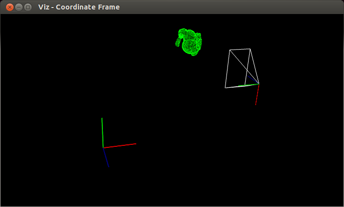

Transformations
Goal
In this tutorial you will learn how to
- How to use makeTransformToGlobal to compute pose
- How to use makeCameraPose and Viz3d::setViewerPose
- How to visualize camera position by axes and by viewing frustum
Code
You can download the code from here.
#include <opencv2/viz.hpp> #include <iostream> #include <fstream> using namespace cv; using namespace std; static void help() { cout << "--------------------------------------------------------------------------" << endl << "This program shows how to use makeTransformToGlobal() to compute required pose," << "how to use makeCameraPose and Viz3d::setViewerPose. You can observe the scene " << "from camera point of view (C) or global point of view (G)" << endl << "Usage:" << endl << "./transformations [ G | C ]" << endl << endl; } static Mat cvcloud_load() { Mat cloud(1, 1889, CV_32FC3); ifstream ifs("bunny.ply"); string str; for(size_t i = 0; i < 12; ++i) getline(ifs, str); Point3f* data = cloud.ptr<cv::Point3f>(); float dummy1, dummy2; for(size_t i = 0; i < 1889; ++i) ifs >> data[i].x >> data[i].y >> data[i].z >> dummy1 >> dummy2; cloud *= 5.0f; return cloud; } int main(int argn, char **argv) { help(); if (argn < 2) { cout << "Missing arguments." << endl; return 1; } bool camera_pov = (argv[1][0] == 'C'); viz::Viz3d myWindow("Coordinate Frame"); myWindow.showWidget("Coordinate Widget", viz::WCoordinateSystem()); Vec3f cam_pos(3.0f,3.0f,3.0f), cam_focal_point(3.0f,3.0f,2.0f), cam_y_dir(-1.0f,0.0f,0.0f); Affine3f cam_pose = viz::makeCameraPose(cam_pos, cam_focal_point, cam_y_dir); Affine3f transform = viz::makeTransformToGlobal(Vec3f(0.0f,-1.0f,0.0f), Vec3f(-1.0f,0.0f,0.0f), Vec3f(0.0f,0.0f,-1.0f), cam_pos); Mat bunny_cloud = cvcloud_load(); viz::WCloud cloud_widget(bunny_cloud, viz::Color::green()); Affine3f cloud_pose = Affine3f().translate(Vec3f(0.0f,0.0f,3.0f)); Affine3f cloud_pose_global = transform * cloud_pose; if (!camera_pov) { viz::WCameraPosition cpw(0.5); // Coordinate axes viz::WCameraPosition cpw_frustum(Vec2f(0.889484, 0.523599)); // Camera frustum myWindow.showWidget("CPW", cpw, cam_pose); myWindow.showWidget("CPW_FRUSTUM", cpw_frustum, cam_pose); } myWindow.showWidget("bunny", cloud_widget, cloud_pose_global); if (camera_pov) myWindow.setViewerPose(cam_pose); myWindow.spin(); return 0; }
Explanation
Here is the general structure of the program:
Create a visualization window.
viz::Viz3d myWindow("Transformations");
Get camera pose from camera position, camera focal point and y direction.
Point3f cam_pos(3.0f,3.0f,3.0f), cam_focal_point(3.0f,3.0f,2.0f), cam_y_dir(-1.0f,0.0f,0.0f); Affine3f cam_pose = viz::makeCameraPose(cam_pos, cam_focal_point, cam_y_dir);
Obtain transform matrix knowing the axes of camera coordinate system.
Affine3f transform = viz::makeTransformToGlobal(Vec3f(0.0f,-1.0f,0.0f), Vec3f(-1.0f,0.0f,0.0f), Vec3f(0.0f,0.0f,-1.0f), cam_pos);
Create a cloud widget from bunny.ply file
Mat bunny_cloud = cvcloud_load(); viz::WCloud cloud_widget(bunny_cloud, viz::Color::green());
Given the pose in camera coordinate system, estimate the global pose.
Affine3f cloud_pose = Affine3f().translate(Vec3f(0.0f,0.0f,3.0f)); Affine3f cloud_pose_global = transform * cloud_pose;
If the view point is set to be global, visualize camera coordinate frame and viewing frustum.
if (!camera_pov) { viz::WCameraPosition cpw(0.5); // Coordinate axes viz::WCameraPosition cpw_frustum(Vec2f(0.889484, 0.523599)); // Camera frustum myWindow.showWidget("CPW", cpw, cam_pose); myWindow.showWidget("CPW_FRUSTUM", cpw_frustum, cam_pose); }
Visualize the cloud widget with the estimated global pose
myWindow.showWidget("bunny", cloud_widget, cloud_pose_global);
If the view point is set to be camera’s, set viewer pose to cam_pose.
if (camera_pov) myWindow.setViewerPose(cam_pose);
Results
Here is the result from the camera point of view.

Here is the result from global point of view.
